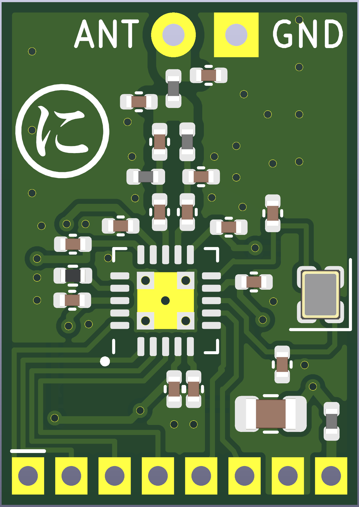
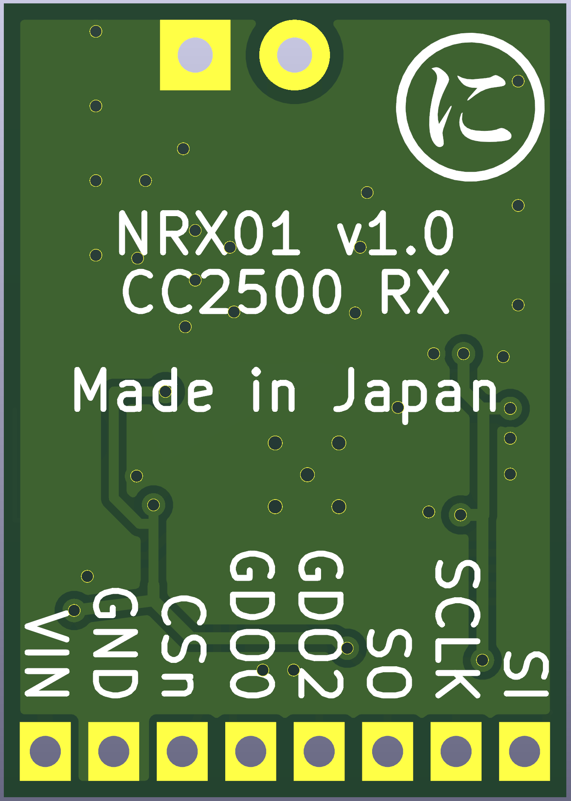

NRX01 S-FHSS SPI制御受信モジュール
TI CC2500 を載せた 14.38 × 20.27 mm の小さな 2.4 GHz 受信モジュールです。マイコンから SPI で制御して、Futaba S-FHSS の送信機の信号を受信します。
写真


特長
- 受信専用：技適のない無線部（CC2500）からは電波を出さない使い方を前提にしています。
- SPI で制御：SPI 4 本（SI・SCLK・SO・CSn）と受信割込み（GDO0）、電源の 8 ピンでマイコンにつなぎます。
- 小型・薄型：14.38 × 20.27 mm、厚さ 0.8 mm の 2 層基板です。
- 参照設計どおりの無線部：TI の CC2500EM 参照設計（0.8 mm 基板版）の配置・配線をそのまま写しています。
- アンテナ：λ/4（約 30 mm）の単線を立てるだけ。隣の GND パッドは同軸ピグテールのシールドにも使えます。
主な仕様
| 無線チップ | TI CC2500（2.4 GHz トランシーバ、受信のみで使用） |
|---|---|
| 対応方式 | Futaba S-FHSS（2.4 GHz、30 ch 周波数ホッピング）※ ホスト側のファームウェアで処理 |
| 外形 | 14.38 × 20.27 mm、2 層、0.8 mm（FR-4）、裏面は GND ベタ |
| 電源 | 3.3 V（CC2500 の動作範囲 1.8〜3.6 V）、受信時 約 20 mA |
| 電源フィルタ | フェライトビーズ ＋ 10 µF ＋ 各電源ピン直近のデカップリング |
| 基準発振 | 26 MHz 水晶、±10 ppm |
| J1（ホスト接続） | はんだパッド 8 個、1.75 mm ピッチ、穴 0.8 mm |
| J2（アンテナ） | ANT と GND、2.54 mm ピッチ、穴 0.9 mm |
| 原価（参考） | 1 枚 約 536 円（JLCPCB に部品の実装まで発注、24 枚。送料は含まず） |
端子（J1）
| ピン | 信号 | 内容 |
|---|---|---|
| 1 | SI | SPI データ入力（MOSI） |
| 2 | SCLK | SPI クロック |
| 3 | SO | SPI データ出力（MISO） |
| 4 | GDO2 | 汎用出力（使わなければ接続不要） |
| 5 | GDO0 | 受信割込み（CRC 正常のパケット受信で High） |
| 6 | CSn | チップセレクト |
| 7 | GND | グラウンド |
| 8 | VIN | 電源 3.3 V |
使い方
NRX01 は無線部だけのモジュールです。S-FHSS の受信処理はつないだマイコンのファームウェアで行います。Seeed Studio XIAO MG24 Sense と組み合わせ、S.BUS・PWM 出力やブラックボックス記録までできる受信機にしたものが NRX02 全部入り受信機、CH32V006 と 6 軸センサーで小さくまとめたものが NRX03 小型ジャイロ受信機 です。
日本では、技適のない CC2500 を送信状態にしないでください。NRX01 用のファームウェアは送信機能を持たない受信専用の作りにしています。
状態
基板データは作成済みです。基板は試作の準備中で、実機での動作確認はまだです。